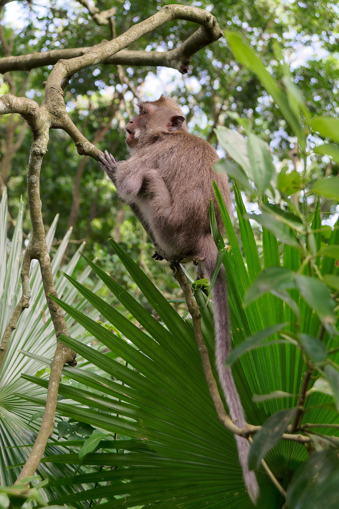
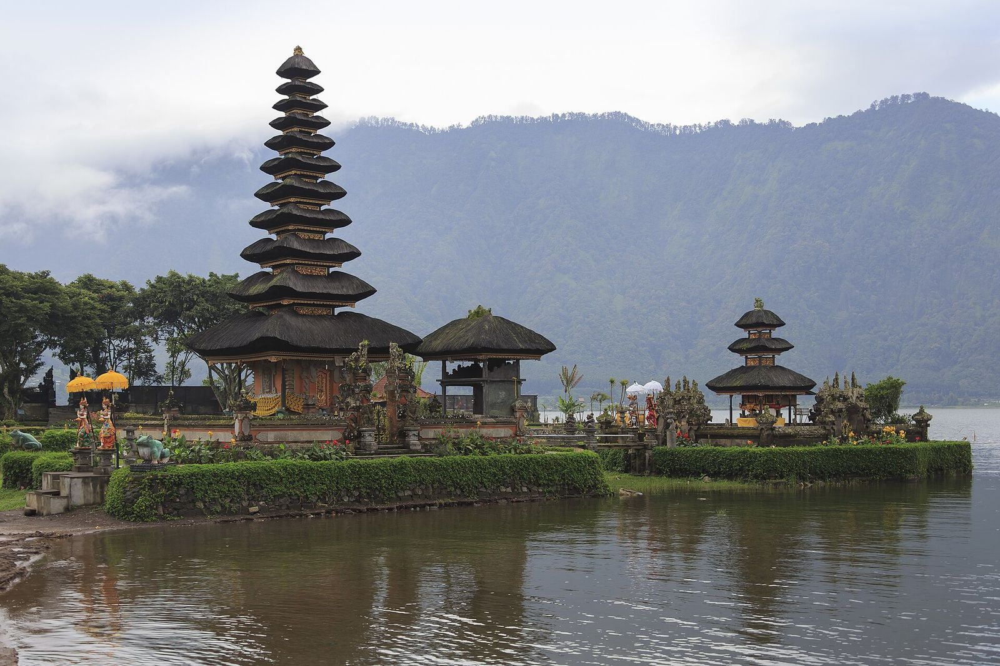
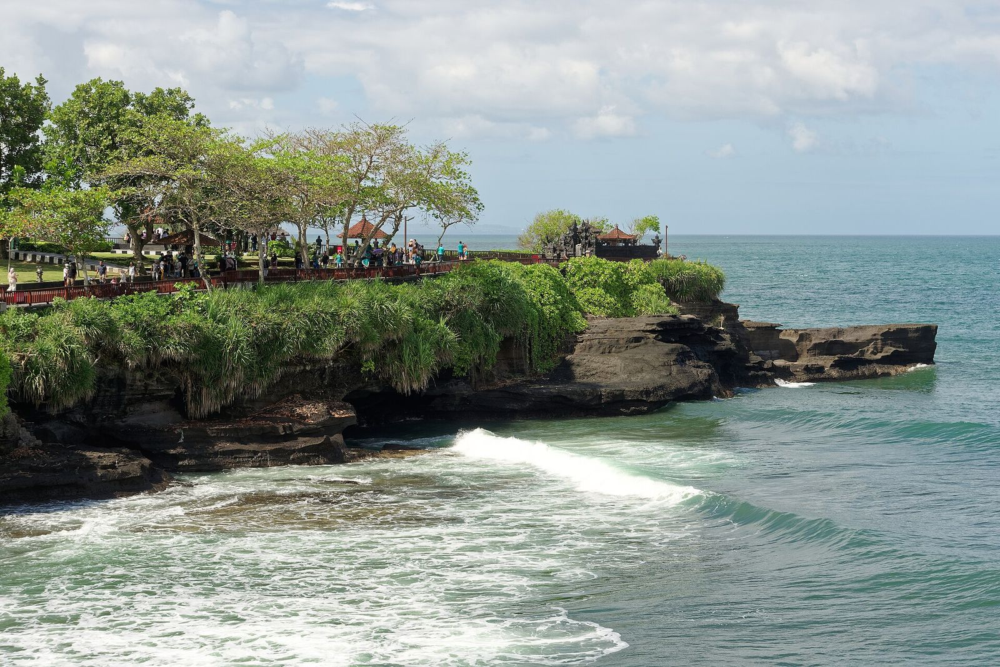
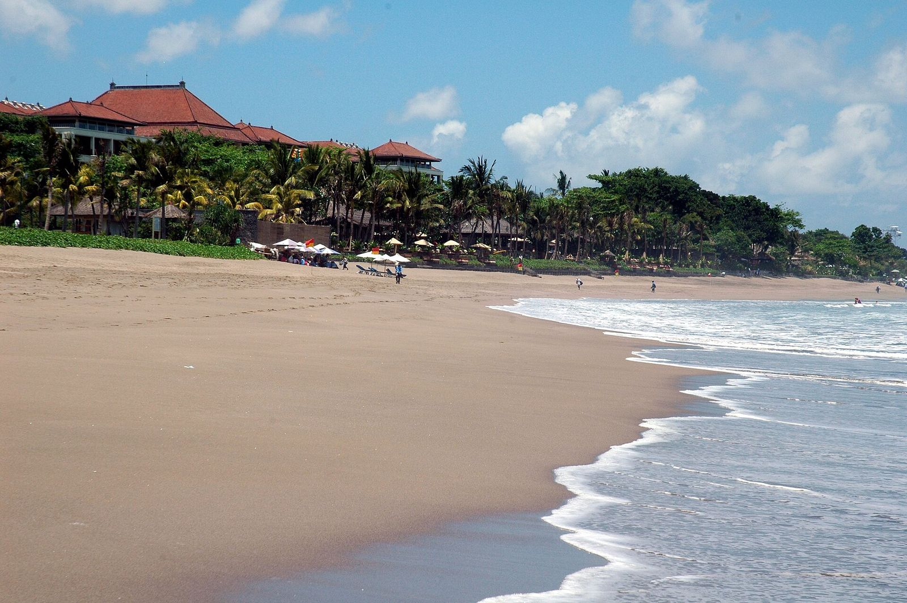
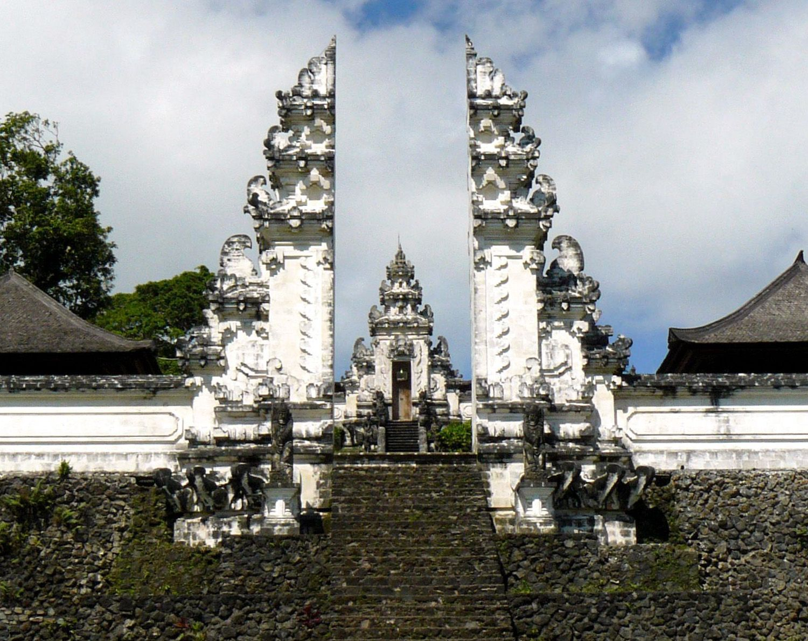

Gianyar
Ubud
Pusat seni dan budaya Bali. Terkenal dengan Puri Ubud, pasar seni, galeri, serta Mandala Suci Wenara Wana (Monkey Forest).
Pura di tepi laut, sawah berundak hijau, gunung berapi, dan budaya yang hidup di setiap sudut pulau — bersama DEVAN BALI TOUR.
Komitmen kami untuk setiap perjalanan Anda di Pulau Dewata.
Dipandu orang Bali yang paham budaya, adat, dan cerita di balik setiap pura dan desa yang dikunjungi.
Itinerary bisa disesuaikan dengan keinginan, waktu, dan gaya liburan Anda.
Rincian biaya jelas sejak awal, tanpa biaya tersembunyi.
Mobil ber-AC yang bersih dengan sopir berpengalaman dan ramah.
Kami jemput dan antar kembali ke hotel atau vila Anda.
Pertanyaan dijawab dengan cepat dan ramah — mulai dari merencanakan perjalanan hingga hari tur Anda.
Bali adalah provinsi di Indonesia yang terletak di antara Pulau Jawa dan Lombok, dengan ibu kota Denpasar. Mayoritas penduduknya memeluk agama Hindu Bali, sehingga pulau ini dikenal dengan julukan Pulau Dewata dan Pulau Seribu Pura.
Lanskap budaya Bali, termasuk sistem irigasi subak, telah diakui UNESCO sebagai Warisan Dunia pada tahun 2012. Dari pantai selatan yang ramai hingga dataran tinggi yang sejuk di sekitar Danau Beratan dan Gunung Batur, Bali menawarkan pengalaman yang beragam.


Pusat seni dan budaya Bali. Terkenal dengan Puri Ubud, pasar seni, galeri, serta Mandala Suci Wenara Wana (Monkey Forest).

Pura di atas batu karang di tepi laut. Saat air pasang, pura tampak seperti mengapung — paling indah menjelang matahari terbenam.

Pura Luhur Uluwatu di puncak tebing Semenanjung Bukit. Sore hari ada pertunjukan Tari Kecak berlatar matahari terbenam.

Pulau di tenggara Bali, dicapai dengan kapal cepat dari Sanur. Ikonik dengan Pantai Kelingking dan spot menyelam bersama pari manta.

Kawasan pantai yang populer untuk berselancar, belanja, kafe, dan menikmati senja.

Panorama Gunung dan Danau Batur. Pendakian subuh untuk melihat matahari terbit sangat populer.

Sawah terasering di utara Ubud yang diairi dengan sistem subak tradisional — pemandangan hijau khas Bali.

Pura Lempuyang Luhur di lereng Gunung Lempuyang — salah satu pura tertua dan suci di Bali, terkenal dengan gerbang candi bentarnya.
Detail rute dan harga sedang kami siapkan.
Harga segera hadirHarga segera hadirHarga segera hadirHarga segera hadir
Hari Raya Tahun Baru Saka. Seluruh Bali hening selama 24 jam: tanpa api, tanpa bepergian, tanpa hiburan — bahkan bandara ditutup. Malam sebelumnya diarak ogoh-ogoh.
Dirayakan setiap 210 hari menurut kalender Pawukon, menandai kemenangan dharma atas adharma. Jalan dihiasi penjor bambu yang menjulang.
Kecak dibawakan puluhan penari pria yang melantunkan "cak" mengiringi kisah Ramayana. Legong adalah tari klasik yang anggun dengan gerak mata dan jari yang detail.
Sistem pengairan sawah tradisional berbasis filosofi Tri Hita Karana — keharmonisan dengan Tuhan, sesama, dan alam. Diakui UNESCO pada 2012.

Musim kemarau (sekitar April–Oktober) umumnya paling cerah. Musim hujan sekitar November–Maret. Perhatikan tanggal Nyepi saat merencanakan.
Sewa mobil dengan sopir, taksi resmi, ojek/taksi daring, atau sewa motor (wajib SIM dan helm). Kapal cepat ke Nusa dari Sanur.
Kenakan kamen/sarung dan selendang, berpakaian sopan, jangan memanjat bangunan suci, dan jangan melangkahi sesajen (canang).
Rupiah (IDR). Tukar uang di money changer resmi, ATM mudah ditemukan, dan pembayaran QRIS banyak diterima.